Audio Basics
Categorization of Sampler Buttons
The sound buttons are colour-coded to help you quickly identify the type of sound effect. Each colour represents a different category, making it easier to find the sound you need. here are the color legends for Sound Buttons:
Default, Uncategorized, Fallback or By ContributionsSpeechesCommonly Used in ProgrammesFM and DJ TapersScoresMusic ScoresAnnouncement TonesOrchestra and Instrumental Hits
The colors of the sound buttons might be different because the app was following the color scheme which the colors might have dark and light tint.
No Content available on Sampler Workbench
If the sound buttons are not showing, means that the sound effects are not loaded yet. Here are the following tips:
Procedures
To download automatically without visiting GitHub to download the SFX Pack,
Go to Sampler
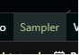
Click on Install or Update Pack.
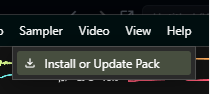
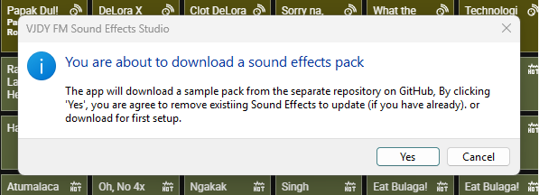
You will see the confirmation so you can update or download. click
Yesto confirm.
This will download the pack from the separate Github Repository. Some sound buttons might be erased to ensure the stable function. and will loaded again once it's finsihed.
Can't hear audio
If the sound is not playing, it may be due to the following reasons:
- AudioContext was paused.
- Your device's volume is muted or too low.
- There is a technical issue with the app.
Technically the AudioContext don't have issues anymore on audio routing which is already fixed before 3.x versions.
Import Media
Go to: Options > Import Media
Choose the supported file types, and media file you want to play or
just drag the supported file to the app.
If the imports detects as Audio or Video, it will show you the
dialog to decide which Deck will import. If the file is MIDI, it will go
straight to the MIDI workbench.
Setup Input Device to be live
Go to:Settings > Audio > Input and Output
Choose input device on Return A, and Return B.
You can enable input to Recorder if you want to bring the input device to be recorded using the Recorder feature.
Audio Buffer issue such as choppy
Recent updates of Sound Effects Studio is getting issue when it comes to Audio Buffering issue which is choppy audio on some devices because of the real-time UI updates that is usingsetInterval();code.
To fix this, go to:Settings > Audio > AudioContext Properties
Set Latency Hint, Sample Rate, and Latency Amount (if you use custom) as much as possible.
Restart is required in order to use the new settings.
This choppy audio is affecting most of mid-range spec laptops or terrible specs of desktop. So, running this on high-powered desktop or laptop will work just fine.
FLAC does show Infinity:NaN on other files
FLAC is a lossless audio codec. It compresses audio without losing any data. Once the specific FLAC audio file does have STREAMINFO metadata, It will show the proper duration. If your encoder didn't include STREAMINFO metadata, the duration will become infinite but the waveform and spectrogram generation will still executed and will show after the playback!
WebAudio Error
This happens if your default device has new changes. For some reason, it will try to play audio to output device that has new settings, but AudioContext refuses to play live and shows this error instead. You must need to restart app in order to fix it.
MIDI
About this feature
This MIDI feature is using WebMIDI API for real time playback of MIDI Sequence, and play MIDI from hardware devices.
Setup MIDI Input Device to be live
Setting up MIDI Input Device is so easy! Just plug your device that supports MIDI Out, and Sound Effects Studio will automatically connects the hardware to the app all the way to the hardware or software synthesizer installed on your computer!
On Android Phone, you need to set USB option to MIDI in order to connect it. Some device might not support properly like OPPO Phones, but it works fine on Samsung Devices.
Be sure to go toworkbench, and press
MIDIto enable MIDI In Message.
Sent All Programs
By pressing this button: 
Panic MIDI Instances
By pressing this button: 
Reset MIDI Output
By pressing this button: 
Digital TrueSurround
About this feature
This app is powered by the new audio system called VJDY Digital TrueSurround! This audio system is using the PCM S16, S24 or S32 LE audio codec, which can hear very clear and it supports up to 8 channels.
Channel Support
It supports2.12F/LFE,3.13F/LFE,5.13F2R/LFE, and7.13F2M2R/LFE,
TrueSurround Emulation
This feature lets you use the 2-channel audio which is the stereo, to upmix everything into other channels with pre-made effects.
>Center Channelwill processMids and High Only,Subwoofer or LFEwill processLow Pass Only,Rear Channelwill processStereo Widening effect, and room reverb effect, andSide Channelwill processthe far reverb effect.
To access this feature, you may found it on theSurroundpanel at the right side bar of the main workspace.
TrueSurround
Emulation
Why we made this?
The purpose is we do not allowed to use Dolby assets and it's logos without the proper license.
Workbench
Sampler
Play sound effects and music scores on special occasions.
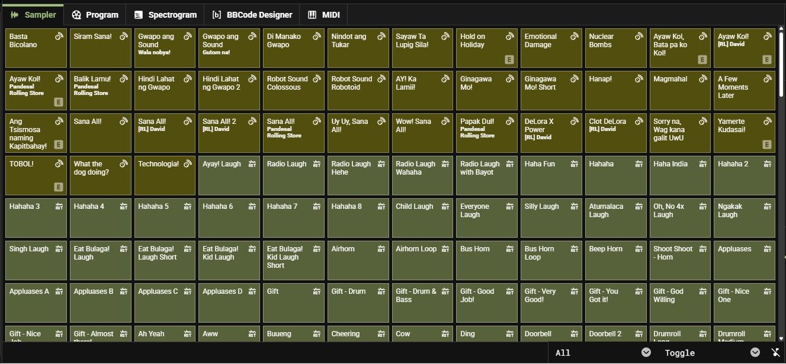
Program
You will see the video playing, lyrics and caption cue that is happening right now. good on output for second display and first display is a monitor.
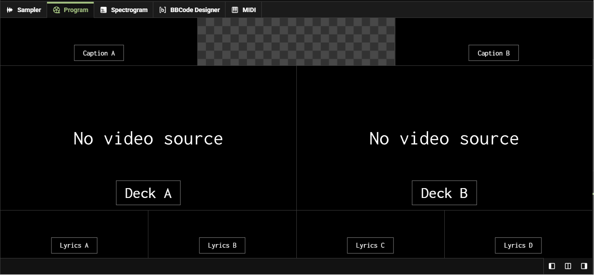
Spectrogram
You will see artifacts of chords, notes and hisses in the frequency. This is so popular for finding any hidden drawings and messages.
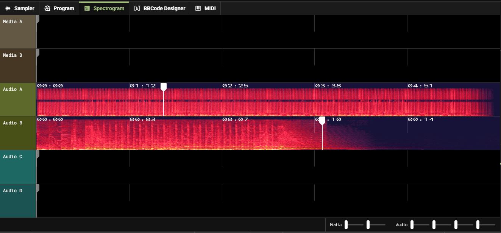
BBCode Designer
Design your presentation powered by BBCode with styling options, animations, fonts and present it using Teleprompter Panel!
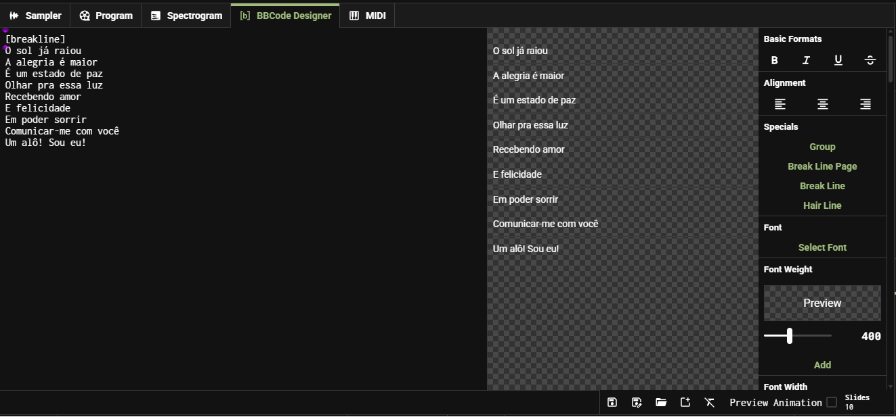
MIDI
Play your favorite MIDI Sequence, Track MIDI Events including channel indicators, and what Instruments and Preset are using, adjust Pitch and Velocity, also you can play Piano directly!
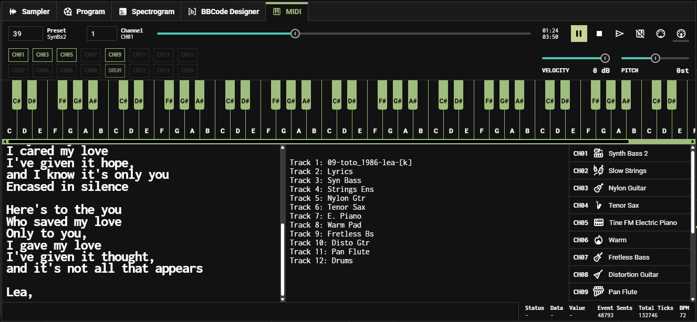
Left Side Bar
Media Panel
You can play videos right here! such as video presentations, title cards, backgrounds, etc. Images are not supported here unless you have to import the still image video on it.
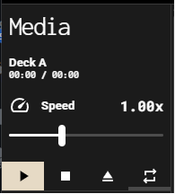
These are the controls to the video to External Visualizer. TheCastbutton will send the video data such as Current Time, Source and Speed to the External Visualizer. and theSwapbutton will swap 2 sources. It's either Source A or Source B.
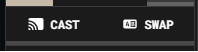
This feature is usingBroadcast Channel Systemin Chromium, which will cause lags on some devices if sending data in real-time while low available space memory or higher CPU usage is too often.
Captions Panel
Import a supported files such asSRTandVTTfiles. and you can monitor the Active and Next Cue on it.
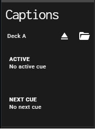
Teleprompter Panel
Present your slides that you created using the BBCode Designer feature which you can find in the workbench (center screen). This is powered by the BBCode Format, with more advanced and new format options such as variable font weight, transform scale, stroke and shadow.
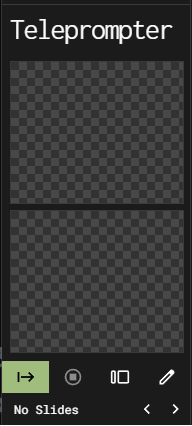
Right Side Bar
VU Meter
You will see a radio-alike but digital version of VU Meter which you will noticed if the audio was peaking.
Effects and Panel
Source
You can control the Master Volume, Sample Volume and each of the Return Volume.
Surround
A feature that you can control a gain value of different channels if the audio channel was specified to the 5.1 and 7.1 Surround.
Switch
Mute Center
This will mute the center channel output, which contains vocals, dialogue, or mono mix in most content.
TrueSurround Emulation
This will attempt to create a surround sound experience using stereo output to ready made effects. Take note that other audio channels with extra channel like 3-8 will not be able to use it.
Screens
Manual
Manually adjust the value of diffferent audio channels. You can also apply preset on below the knobs.
Panner
Adjusts its value of different audio channels based on your applied 3D X and Y Positions, doing this will overwrite your manual settings but will follow the preset if you set only the desired channel configuration.
Spectator
You will see what channel is actually heard on real time at the 3D workspace, which you can see what channel is actually playing right now in speaker setup.
Mixer
Control each volume, gain and pitch in different media sources.
Preamp
Adjust the gain volume of audio before it can pass to the compressor which can reduce clipping later.
Compressor
Can limit the volume of the audio clipping which is ideal for safety to the speakers.
Equalizer
Adjust every band frequency in 12 different kilohertz, from 31.5Hz to 16kHz.
Stereo Enhancer
Can enhance the widened stereo as you create a virtual 3D spatial experience. These feature is most common thing in Poweramp, and AIMP for Desktop. but on this app, has additional effects including Condense, and Double.
Bass
Can enhance the bass which is useful for Fader Effect. it can only be affected in Stereo. other Surround channels cannot be used with this effect unless Surround channels are downmixed to Stereo.
Cutoff
Can fade, filter, and create a massive fade in, fade out animation while the host of event or radio anchor was speaking.
Reverb
Can enhance the environment which is useful for massive 3D crossfeed. it can only be affected in Stereo. other Surround channels cannot be used with this effect unless Surround channels are downmixed to Stereo.
Other Panel Bars
Audio and Media Progress Bar
Monitor and control the progress of audio, and scroll and skip to the video along on Media A and B.
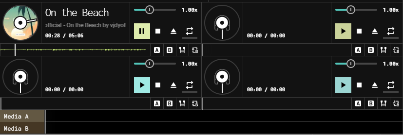
Title Bar
You can access the Menu Bar, monitor the performance of your computer, audio meter and the visualizer. You can check the Time and Date Today, and the Weather Today.
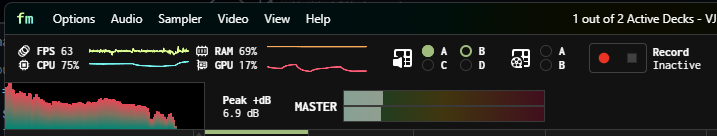
Status Bar
You can see the Session and Underrun Time of the AudioContext, see recent on-screen display message, battery percentage, effect indicators such as Bass, Stereo Enhancer, and TrueSurround Emulation, USB DAC indication, power peak and the channel configuration.
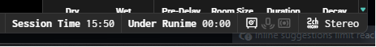
Keyboard Shortcuts
Global
Settings
F8
Developer Console
F9
Toggle Hotkey
F10
Toggle Fullscreen
F11
Audio Panic
Backspace
Close App/Dialog
Alt
F4
Close Dialog or Exit Fullscreen
Esc
Decrease Volume
Ctrl
-
Increase Volume
Ctrl
+
About App
K
Execute Oscillator Bleep
COMMA
Open Announcement Execution
PERIOD
Sample Play by Keybinds
Q W E R T Y U I O P
1 2 3 4 5 6 7 8 9 0
Assign Sampler Button to Keybinds
Ctrl
Right Mouse Click to any sampler.
Play/Pause Audio Decks A-D
Alt + 1
Alt + 2
Alt + 3
Alt + 4
Play/Pause Media Decks A-B
Alt + 5
Alt + 6
BBCode Designer
Undo on Text Area
Ctrl + Z Redo on Text Area
Ctrl + Y Save
Ctrl + S Save as New
Ctrl + Shift + S Open
Ctrl + O Remove Format
Ctrl + R New Document
Ctrl + N
Program
Show Video Deck A
Ctrl + ⟵ Show Video all
Ctrl + UpArrow Show Video Deck B
Ctrl + ⟶